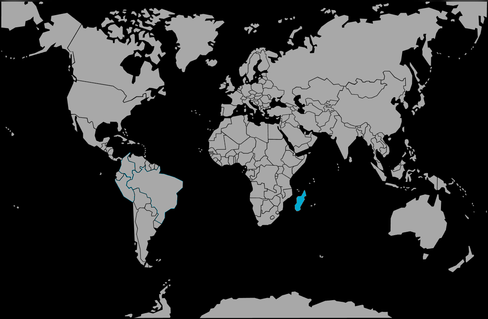

Systématique
- Ordre : Atheriniformes
- Famille : Bedotiidae
- Genre : Bedotia
- Espèce : Bedotia madagascariensis
Bedotia madagascariensis est un poisson arc‑en‑ciel endémique de Madagascar, au corps allongé et légèrement comprimé latéralement, présentant une bande sombre longitudinale et des nageoires aux reflets orangés ou rougeâtres.
Les adultes atteignent 8–10 cm; c’est une espèce de banc active qui occupe surtout la zone médiane et supérieure de la colonne d’eau et montre des reflets particulièrement vifs dans une eau claire et bien oxygénée.
Bedotia madagascariensis vit en groupes lâches, avec une hiérarchie basée sur la taille; en aquarium, il doit être maintenu en banc d’au moins 8 à 10 individus pour limiter le stress et éviter les comportements de dominance trop marqués sur quelques sujets.
Poisson globalement paisible, il cohabite bien avec d’autres espèces calmes de taille similaire; il apprécie les bacs bien oxygénés, avec un courant léger à modéré et de longues zones de nage dégagées.
Mode : ovipare, avec une ponte disséminée sur la végétation ou des supports fins; les œufs, légèrement adhésifs, se fixent sur les plantes ou les mops, sans véritable protection parentale.
En aquarium, le frai peut être régulier lorsque les conditions sont stables; pour élever les jeunes, il est conseillé de récupérer les œufs ou d’isoler les parents après la ponte afin d’éviter la prédation des alevins.
Dimorphisme sexuel : les mâles sont plus colorés, avec des nageoires impaires plus étirées et une bande latérale souvent plus marquée; les femelles ont un ventre plus rebondi, surtout en période de reproduction, et des couleurs plus discrètes.
Espérance de vie : la longévité en captivité se situe en général entre 4 et 6 ans dans un aquarium frais, bien brassé et correctement entretenu.
L’espèce vit dans des rivières et lacs de l’est de Madagascar, dans des eaux claires et bien ombragées, à faible altitude; elle préfère les secteurs à courant lent à modéré, avec une forte présence de végétation rivulaire, de racines et de branches immergées.
Répartition
Origine naturelle :
- Endémique de Madagascar, entre le fleuve Ivoloina et le cours d’eau Manambolo dans la partie est de l’île.
- Présente dans les tronçons inférieurs de rivières claires et dans certains lacs connectés aux cours d’eau.
Les populations se rencontrent en groupes dans les sections à courant modéré et dans des zones plus calmes proches des berges, souvent ombragées par la végétation.
Paramètres de maintenance
Température : 20 à 25 °C, avec une préférence pour une eau plutôt fraîche; éviter les températures élevées prolongées.
pH : environ 6,5 à 7,5.
GH : 5 à 15 °dGH, eau douce à moyennement dure.
Courant : léger à modéré, avec une bonne oxygénation et une filtration efficace.
Volume conseillé : au minimum 200 L pour un banc d’au moins 8 à 10 individus, avec une façade longue pour permettre la nage en groupe.
Régime alimentaire
Régime : carnivore à tendance insectivore; dans le milieu naturel, l’espèce consomme surtout de petits invertébrés et des insectes tombant à la surface, complétés par du zooplancton.
En aquarium, elle accepte facilement paillettes, granulés de petite taille, nourriture congelée et vivante (daphnies, artémias, larves de moustiques), à distribuer en plusieurs petits repas quotidiens.
Une alimentation variée et riche en proies animales favorise la croissance, la reproduction et l’intensité des couleurs de ce poisson arc‑en‑ciel malgache.